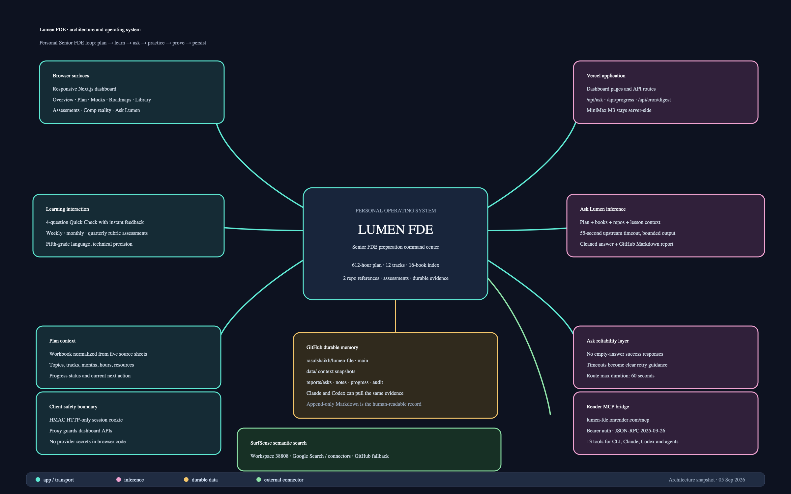

Snapshot: 5 September 2026
System: Lumen FDE, Rasul’s personal Senior Forward
Deployed Engineer preparation operating system
Repository: rasulshaikh/lumen-fde
Dashboard:
https://lumen-fde.vercel.app
MCP bridge:
https://lumen-fde.onrender.com/mcp

Lumen FDE turns Rasul’s Senior FDE workbook into a working learning system. The browser is the interaction layer. Vercel hosts the dashboard and the MiniMax-backed Ask API. Render hosts the protected MCP bridge so Claude, Codex, and other MCP clients can use the same plan and tools. GitHub is the durable, inspectable memory layer for Ask reports, study notes, progress events, and audit records. SurfSense is the live semantic-search connector. The private PDFs remain local source material; the application receives curated context indexes rather than shipping the books into the browser.
The loop is:
Plan → choose a topic → read/watch/build → ask Lumen → recall with a quick check
→ complete weekly/monthly/quarterly evidence → record progress → inspect analyticsThe system separates three concerns:
data/workbook.json.data/source.xlsx.data/library-context.json.data/repository-context.json for OpenBot and AI Engineering
from Scratch.data/lesson-context.json for structured
explanations, exercises, interview angles, and next steps./.1B · 2C · 3A · 4D./api/ask.maxDuration = 60 and a bounded 55-second upstream
timeout.reports/asks/./api/progress for append-only progress
events.lumen-mcp.2025-03-26 at
/mcp.The user opens https://lumen-fde.vercel.app. Next.js
renders the learning views and keeps provider credentials on the server.
Login uses the configured Lumen username and password, then issues an
HMAC-signed HTTP-only session cookie. proxy.ts protects
application API routes. The logo returns to /.
The browser never receives MINIMAX_API_KEY,
GITHUB_TOKEN, RESEND_API_KEY,
MCP_API_KEY, LUMEN_INTERNAL_API_KEY, or
SURFSENSE_API_KEY.
Ask panel
→ POST /api/ask
→ proxy session check, or internal service-key check
→ assemble plan + indexed library + repos + lesson context
→ MiniMax M3, bounded request
→ clean answer and reject empty output
→ return answer to browser
→ save Markdown report to GitHubThe answer contract asks for language a fifth grader can follow while retaining technical accuracy, a Senior FDE connection, an example, and a practical next step. Hidden reasoning and provider details are not shown to the learner.
Claude / Codex / MCP client
→ POST https://lumen-fde.onrender.com/mcp
→ Authorization: Bearer MCP_API_KEY
→ tools/call: ask_lumen
→ Render → Vercel /api/ask with x-lumen-internal-key
→ MiniMax M3
→ answer + GitHub report pathRender has a direct MiniMax fallback for cases where the Vercel bridge variables are absent. In the intended deployment, the Vercel bridge is the active path.
The dashboard POSTs a progress event to /api/progress.
MCP record_progress can do the same from a CLI or agent.
Each event becomes Markdown under reports/progress/. The
dashboard’s current topic status remains the source for the live plan
view; GitHub is append-only history.
With SURFSENSE_API_KEY and
SURFSENSE_WORKSPACE_ID=38808 on Render,
semantic_search calls:
POST https://api.surfsense.com/workspaces/38808/scrapers/google_search/scrapeThe service sends the query, language, country, and bounded page count. If SurfSense is unavailable or not configured, the tool falls back to GitHub repository search.
The Vercel Cron route is designed to run daily. It can call MiniMax
for a short progress-aware motivation digest and send it with Resend to
shaikhrasul02@gmail.com. It requires
CRON_SECRET, MINIMAX_API_KEY,
RESEND_API_KEY, and a verified
RESEND_FROM_EMAIL. Cron invokes a route on schedule; it is
not an always-on worker.
| Layer | Source | Role |
|---|---|---|
| Plan | data/workbook.json |
Topics, tracks, months, hours, resources, workbook-derived progress |
| Library | data/library-context.json |
Curated index of private books and FDE relevance |
| Repositories | data/repository-context.json |
OpenBot and AI Engineering from Scratch context |
| Lesson | data/lesson-context.json |
Shell lesson, exercise, interview angle, next step |
| Ask evidence | reports/asks/ |
Prompt, context summary, answer, timestamp, model label |
| Study memory | reports/notes/ |
Explicitly saved notes |
| Progress | reports/progress/ |
Append-only topic status and notes |
| Audit | reports/audit/ |
Durable records for mutating MCP actions |
The Render server exposes:
get_plan — filter the plan by query, month, or
track.get_learning_context — read book, repository, and
lesson indexes.ask_lumen — request a fifth-grade-language technical
explanation.list_ask_reports — list GitHub Markdown Ask
reports.read_ask_report — read one saved report by path.save_study_note — explicitly save a durable note.record_progress — explicitly record a topic status
event.get_progress_history — list progress events.get_progress_analytics — summarize history and recent
events.score_assessment — score Quick Check or rubric
assessments.semantic_search — SurfSense search or GitHub
fallback.get_audit_log — inspect recent MCP actions.get_connection_map — return canonical service
connections.Suggested MCP client configuration:
{
"mcpServers": {
"lumen-fde": {
"url": "https://lumen-fde.onrender.com/mcp",
"headers": {
"Authorization": "Bearer <MCP_API_KEY>"
}
}
}
}Assessments are learning gates, not account locks.
1B · 2C · 3A · 4D.score_assessment provides the authoritative
server-side path when an agent needs to score it.Thirty minutes. Close notes, explain one topic, solve two small problems, and write one production lesson. The rubric checks correctness, reasoning, production tradeoffs, and communication.
Ninety minutes. Combine several plan topics into a design or debugging task. The rubric checks technical depth, tradeoff quality, implementation evidence, and explanation quality.
Three hours. Build and defend a realistic FDE artifact: architecture, implementation, tests, operations, and customer-facing explanation. The rubric checks end-to-end ownership and evidence.
Currently there are no automatic unlock rules, saved UI assessment
scores, pass/fail status, deadline tracking, streak tracking, proof
uploads, or submission history. Open-ended answers are evaluated through
the rubric and can be sent to Ask Lumen or
score_assessment. This is an explicit boundary, not a
hidden feature.
https://github.com/rasulshaikh/lumen-fde
The main branch contains the dashboard, MCP service,
normalized data, context maps, and durable reports. GitHub is the
collaboration surface for Claude and Codex. Runtime Ask side effects may
add commits to reports/asks/, so pull before local
edits.
https://lumen-fde.vercel.app
Vercel hosts the Next.js dashboard, API routes, MiniMax Ask path, progress endpoint, and scheduled digest route. The clean URL may be protected by account-level access control in some server-to-server contexts; the service bridge uses a stable deployment alias when required.
lumen-mcphttps://lumen-fde.onrender.comhttps://lumen-fde.onrender.com/healthzhttps://lumen-fde.onrender.com/mcpRender runs the Node MCP service from mcp/ on the free
tier. Auto-deploy follows main. The free tier may sleep
after inactivity, so the MCP is not guaranteed to be continuously warm.
Health checks can reduce cold-start surprises but cannot provide
paid-tier always-on guarantees.
Names only, never values:
MINIMAX_API_KEY,
RESEND_API_KEY, RESEND_FROM_EMAIL,
CRON_SECRET, DIGEST_TO_EMAIL,
LUMEN_USERNAME, LUMEN_PASSWORD,
GITHUB_TOKEN, GITHUB_REPO,
GITHUB_BRANCH, LUMEN_INTERNAL_API_KEY.GITHUB_TOKEN,
GITHUB_REPO, GITHUB_BRANCH,
MCP_API_KEY, PUBLIC_MCP_URL,
LUMEN_ASK_URL, LUMEN_INTERNAL_API_KEY,
SURFSENSE_API_KEY, SURFSENSE_API_URL,
SURFSENSE_WORKSPACE_ID.MINIMAX_API_KEY is only needed when the Vercel bridge is
disabled. Keeping two provider keys increases the security surface;
remove the Render copy once the bridge is confirmed stable.401.2025-03-26 and
server lumen-mcp.429 after the
configured threshold... explicitly
in read_ask_report, even though GitHub returned Not Found
for the tested traversal shape.# Pull durable Ask reports and progress before local work
git pull origin main
# Inspect reports
git ls-tree -r --name-only origin/main reports
# Deploy dashboard changes
vercel --prod
# Inspect Vercel environment names
vercel env ls production
# Check Render MCP health
curl -fsS https://lumen-fde.onrender.com/healthzFor a new study session:
Lumen is not just a dashboard and not just a chatbot. It is an evidence loop. The interface makes the next action obvious. The model makes hard material explainable. Assessments force retrieval. GitHub preserves proof. MCP makes the system available to the tools used to build and operate it. The strongest future version keeps these boundaries clear while adding deeper retrieval and durable evaluation only when the learning workflow proves it needs them.